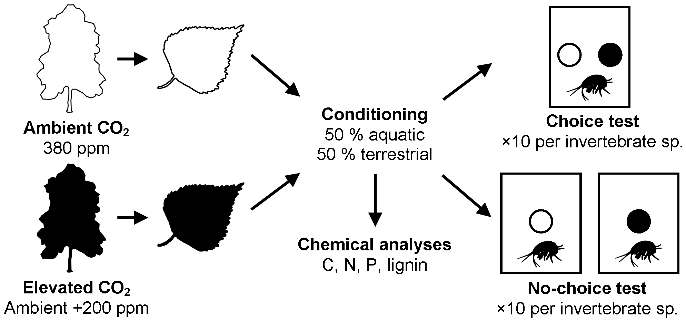

library(dray) # remotes::install_github("matt-dray/dray")Still D-R-A-Yphd_text <- dray::phdJune 30, 2018

I wrote a thesis, but a Markov chain can rewrite it and make about as much sense as the original.
See also an updated version of this blog for a better approach.
I wrote a PhD thesis in 2014 called ‘Effects of multiple environmental stressors on litter chemical composition and decomposition’. See my viva presentation slides here if you don’t really like words.
On graduation day, a stranger came up to me and, to paraphrase, said ‘you doctors should be proud of what you’ve achieved, you’re doing a great service’. I didn’t have the heart to tell him that I wasn’t a medical doctor. No, I was something nobler and altogether more unique: a doctor of rotting leaves.
You’re thinking: ‘gosh, what a complicated subject that must be; how could I ever hope to achieve such greatness?’ The answer is that you should simply take my thesis and use a Markov chain to generate new sentences until you have a fresh new thesis. The output will make probably as much sense as the original but won’t be detected easily by plagiarism software.
Heck, I’ll even do it for you in this post.
You’re welcome. Don’t forget to cite me.
I’ll be using a very simple approach: Markov chains.
Basically, after providing an input data set, a Markov chain can generate the next word in a sentence given the current word. Selection of the new word is random but weighted by occurrences in your input file.
There’s a great post on Hackernoon that explains Markov chains for text generation. For interactive visuals of Markov chains, go to setosa.io.
Text generation is an expanding field and there are much more successful and complicated methods for doing it. For example, Andrej Karpathy generated some pretty convincing Shakespeare passages, Wikipedia pages and geometry papers in LaTeX using the ‘unreasonably effective’ and ‘magical’ power of Recurrent Neural Networks (RNNs).
I’ll be using modified R code written by Kory Becker from this GitHub gist.
In a similar vein, Roel Hogervorst did a swell job of generating Captain Picard text in R from Star Trek: The Next Generation scripts, which is certainly in our wheelhouse.
Because I’m helpful I’ve created a text file version of my thesis. You can get it raw from my draytasets (haha) GitHub repo.
Alternatively you could get the data from the {dray} package.
We’ll alter the data slightly for it to be ready for passing into the Markov chain.
# Remove blank lines
phd_text <- phd_text[nchar(phd_text) > 0]
# Put spaces around common punctuation
# so they're not interpreted as part of a word
phd_text <- gsub(".", " .", phd_text, fixed = TRUE)
phd_text <- gsub(",", " ,", phd_text, fixed = TRUE)
phd_text <- gsub("(", "( ", phd_text, fixed = TRUE)
phd_text <- gsub(")", " )", phd_text, fixed = TRUE)
# Split into single tokens
terms <- unlist(strsplit(phd_text, " "))Read the markovchain package and fit a Markov chain to the text data.
We’re going to seed the start of each ‘sentence’ (a sequence of n words, where we specify n). We’ll do this by supplying one of 50 unique values to the set.seed() function in turn. This seed then starts the chain within the markovchainSequence() function.
This table shows 50 samples of length 50 that I generated with the code above, each beginning with a randomly-selected token.
The output is mostly trash because the Markov chain doesn’t have built in grammar or an understanding of sentence structure. It only ‘looks ahead’ given the current state.
You can also see that brackets don’t get closed, for example, though an opening bracket is often followed by an author citation or result of a statistical test, as we might expect given the source material.
I’ve selected some things from the output that basically look like normal(ish) phrases. Simply rearrange these to build a thesis!
My favourites (my comments in square brackets):
| Generated sentence | Comment |
|---|---|
| Not all invertebrate species are among tree species | Literally true |
| Effect of deciduous trees may be appreciated | Well, they should be thanked for giving us oxygen and fruits |
| Species-specific utilization of Cardiff University | Humans inside, pigeons on the roof |
| Litter was affected by Wallace , Dordrecht | Who is this Dutch guy who’s interfering with my studies? |
| Bags permitted entry of stream ecosystem | I should hope so; I was investigating the effect of the stream ecosystem on the leaf litter stored in those bags |
| Permutational Analysis and xylophagous invertebrates can affect ecosystem service provision | My analysis will affect the thing its analysing? The curse f the observer effect. |
| Most studies could shift invertebrate communities | Hang on, this is the observer effect again; I thought I was studying ecology, not physics |
| This thesis is responsible for broad underlying principles to mass loss | Health warning: my thesis actually causes decay (possibly to your brain cells) |
| Carbon dioxide enrichment altered chemical composition | Aha, actually true |
Some other things that vaguely make sense:
So now you can just paste all this together. Congratulations on your doctorate!
Last rendered: 2023-08-08 23:02:14 BSTR version 4.3.1 (2023-06-16)
Platform: aarch64-apple-darwin20 (64-bit)
Running under: macOS Ventura 13.2.1
Matrix products: default
BLAS: /Library/Frameworks/R.framework/Versions/4.3-arm64/Resources/lib/libRblas.0.dylib
LAPACK: /Library/Frameworks/R.framework/Versions/4.3-arm64/Resources/lib/libRlapack.dylib; LAPACK version 3.11.0
locale:
[1] en_US.UTF-8/en_US.UTF-8/en_US.UTF-8/C/en_US.UTF-8/en_US.UTF-8
time zone: Europe/London
tzcode source: internal
attached base packages:
[1] stats graphics grDevices utils datasets methods base
other attached packages:
[1] markovchain_0.9.3 dray_0.0.0.9000
loaded via a namespace (and not attached):
[1] Matrix_1.6-0 expm_0.999-7 jsonlite_1.8.7 compiler_4.3.1
[5] plotrix_3.8-2 Rcpp_1.0.11 parallel_4.3.1 jquerylib_0.1.4
[9] yaml_2.3.7 fastmap_1.1.1 lattice_0.21-8 R6_2.5.1
[13] igraph_1.5.0.1 knitr_1.43.1 htmlwidgets_1.6.2 tibble_3.2.1
[17] bslib_0.5.0 pillar_1.9.0 RColorBrewer_1.1-3 rlang_1.1.1
[21] utf8_1.2.3 wordcloud_2.6 DT_0.28 cachem_1.0.8
[25] xfun_0.39 sass_0.4.7 RcppParallel_5.1.7 cli_3.6.1
[29] magrittr_2.0.3 crosstalk_1.2.0 digest_0.6.33 grid_4.3.1
[33] rstudioapi_0.15.0 lifecycle_1.0.3 vctrs_0.6.3 evaluate_0.21
[37] glue_1.6.2 stats4_4.3.1 fansi_1.0.4 gifski_1.12.0-1
[41] rmarkdown_2.23 ellipsis_0.3.2 tools_4.3.1 pkgconfig_2.0.3
[45] htmltools_0.5.5